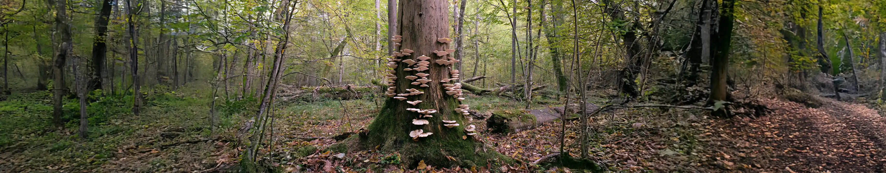

Skin Cancer

When unwanted growths, stubborn skin conditions, and especially cancers take root, your skin needs more than routine care—it calls for expert intervention. Our dermatologists are masters at removing these challenges with precision procedures, tailored to your unique needs. Using advanced techniques and a compassionate approach, we minimize disruption and promote swift healing, helping you reclaim healthy, confident skin.
Basal Cell Carcinoma
The most common form of skin cancer, appearing as a pearly or waxy bump, often on sun-exposed areas like the face or neck. It grows slowly but can invade nearby tissues if untreated. Treatments include surgical excision, Mohs surgery, or cryotherapy for smaller lesions.
Melanoma
A dangerous skin cancer arising from pigment-producing cells, often presenting as an asymmetrical, irregularly colored mole that changes over time. Early detection is critical. Treatments include wide surgical excision, immunotherapy, or radiation for advanced cases.
Squamous Cell Carcinoma
A skin cancer forming in the outer layers, often as a scaly, red patch or sore that doesn't heal, linked to sun exposure. It can spread if untreated. Treatments include Mohs surgery, excision, or radiation therapy for deeper cases.